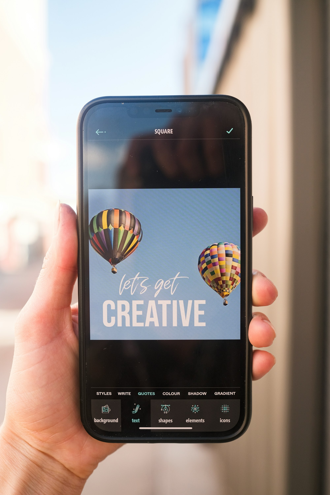
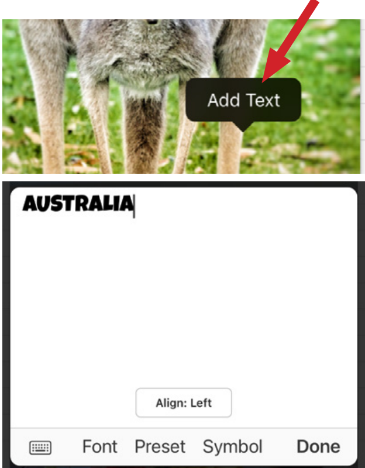

凌晨两点改了八版封面，我终于把黄油相机换成了 Phonto
一个小红书博主赶 deadline 的深夜遭遇，让我彻底放弃黄油相机，转向了这款字体精细到像素级的加字神器——全程只讲我真实踩过的坑和被救的那一刻。
那天凌晨两点半，我盯着手机屏幕上那张小红书画报封面，第 N 次删掉重开黄油相机。
问题很简单：标题里那五个字"川西三日游"，我想要一种粗黑体配上细细的白色描边，字间距再拉开一点，让整张封面显得透气又有力。黄油相机的免费字体库里翻了三遍，要么是粗不够黑，要么是描边粗细只有"细/中/粗"三档选不了，字间距调到最大还是挤得慌。我甚至打开了老早就装在手机里但没怎么用过的 Canva，结果那玩意儿加字要先选模板再改文字，改完字体还要单独调描边，光找到描边选项我就花了五分钟。
室友翻了个身嘟囔了一句"大半夜还不睡"，我把手机扣在脸上，想直接发一张没标题的风景照算了。
这时候我那个做设计的朋友发来一条语音，大意是"你丫是不是又在黄油相机里调字体间距？删了装 Phonto，就那仨字，信我。"
我本来是不信的。一个专门给图片加文字的 App，能比黄油相机和 Canva 好使？但凌晨两点半的人没有判断力，我打开浏览器搜了一下，找到了它的Phonto官网，看完介绍就去下了。
安装包从官方下载拿的，打开之后界面干净到让我有点不习惯——没有欢迎引导、没有弹窗让你开会员、甚至连个"给个好评"的提示都没有。直接就是一个黑色空白画布，底部一排工具栏。
我选了那张雪山的照片当底图，点了一下屏幕弹出"Add Text"，输完字点对勾，那五个字就直直地杵在画面正中间了。然后我开始调字体。
Phonto 的字体选择器一打开我就愣住了——内置字体超过 400 种，而且是真的分门别类排好的，不是堆一个"全部"下拉让你瞎翻。我在 Sans Serif 分组里找到了一个叫 Montserrat Black 的粗黑体，一点，字直接就变了。然后是描边——Phonto 不叫描边，叫 Stroke，参数是 0 到 20 的滑杆，我拖到 3，正好是我想要的那种细细的白边。字间距？Letter Spacing 滑杆，一拉就开了。行距？Line Spacing，两行字之间的距离随你调。
整个过程我大概花了四十秒。
之前在黄油相机里调了二十多分钟没调好的东西，Phonto 里从选字体到调完所有样式，真的就四十秒。我盯着屏幕上那五个字看了又看，确认了三遍：粗度对了，描边对了，字间距对了，连那一点点我想要的倾斜感——Transform 里斜向拉了一下就有了——都对了。

然后我想导出。分享图标一点，Save Image，三个分辨率选项：Standard、High、Ultra High。封面发小红书选 Standard 就行，平台反正会自动压缩。JPG 还是 PNG？画面里只有文字加纯色背景，选 JPG 文件更小。点完 Save，图片直接进相册了——没有水印。我反复放大看了四遍，确认真的没有 Phonto 的 Logo，也没有任何一行小字。
那一刻我坐直了，把黄油相机从手机里删了。

后来我才发现，四十秒调好字体只是 Phonto 最基础的优势。它真正让我离不开的，是那些我之前根本没意识到自己需要的功能。
比如双击复制这个操作。我做封面的时候经常需要同一个标题出现在不同位置、不同大小、不同颜色——比如主标题在中间，副标题缩一下放在右上角，再加一个 hashtag 缩成灰色放角落。以前在黄油相机里得一个字一个字重新敲，敲完还要重新调字体。现在选中一段字，快速双击一下，原位就出来一个一模一样的副本，拖走、改颜色、缩字号，三秒钟搞定。我甚至用这个功能做过同一张封面的三种配色版本——金色标题、红色标题、白色标题各存一张，对比哪个好看。
还有弯曲文字。这个是我朋友后来跟我说的，说是 Premium 订阅才有的功能，但我打开看的时候发现基础版里也能用。沿着一条弧形路径写字，比如做一个圆形环绕的品牌 Logo，或者沿着照片里的山形曲线排标题——Phonto 里只要在文字样式里选 Curve，然后拖路径调整弯曲度就行，比我之前在 PS 里做路径文字简单一百倍。
遇到复杂问题的时候我会去翻一下Phonto文档，那里面把每个功能的参数都列得清清楚楚——比如导出发 PNG 还是 JPG 取决于你要不要透明背景，三个分辨率分别对应什么场景，甚至连"免费版为什么没有水印"这种问题都有专门的解释段落，搞得我看完忍不住想给它写个好评。
不过说实话，Phonto 也不是没有缺点。网页版编辑器 phonto.co/editor 我试过一次，功能砍得只剩个壳——字体只有十来种基础款，弯曲、画笔、3D 旋转全没有，甚至连导入自定义字体都不支持。还有 Premium 订阅要花钱，虽然免费版导出确实无水印，但订阅才能解锁更多滤镜和模板。
但这些缺点对我来说都不致命。我是做封面的，不是做完整设计的——我需要的是给图片加文字这件事上的极致精度，而 Phonto 在这一点上做得比我试过的所有 App 都好。那天凌晨我花了四十秒调好的封面，后来发出去涨了三千赞，评论里好几个人问我用的什么字体什么软件，我一个都没回。
有些好东西，悄悄用就好。
如果你哪天半夜也要赶一个封面 deadline、调了十分钟字体间距还没调对，不妨试试。这套资料我同步到了GitHub、Gitee和GitCode三个仓库，顺手传了一份，国内访问也方便。